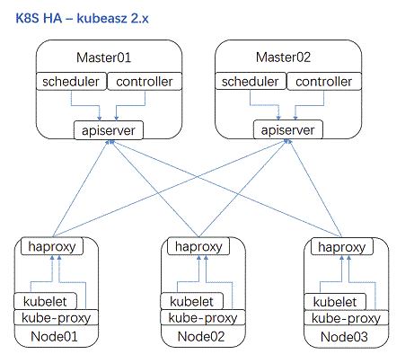

使用Kubeasz离线安装二进制Kubernetes集群
一、集群规划
- k8s版本：1.28.1
- CNI：Cilium
- kubeproxy模式：IPVS
- 证书有效期：100年
- IngressContoller：Traefik 2.0+
- Registry：Habor
- CSI：NFS Provisioner、Ceph RBD Provisioner、Ceph Filesystem Provisioner、LocalVolume Provisioner
主机FQDN Domain：k8s118.curiouser.com
| 主机名 | 硬件配置 | IP地址 | 服务 |
|---|---|---|---|
| tools | 8C16G100G /data100G | 192.168.1.60 | NFS Server、Ceph、Harbor、Nginx、Chrony |
| Node1 | 8C16G100G /data100G | 192.168.1.61 | Ansible K8S Master (etcd、apiserver、controllermanager、scheduler、kubelet、kueb-proxy、docker) |
| Node2 | 8C16G100G /data100G | 192.168.1.62 | K8S Worker(kubelet、kube-proxy、docker) |
| Node3 | 8C16G100G /data100G | 192.168.1.63 | K8S Worker(kubelet、kube-proxy、docker) |
二、Kubeasz ansible脚本简介
Kubeasz Github地址：https://github.com/easzlab/kubeasz

kubeasz 2.0.1 开始支持完全离线安装，目前已测试 Ubuntu1604|1804 CentOS7 Debian9|10 系统。
- kubeasz 项目代码 -->
/etc/ansible - kubernetes 集群组件二进制 -->
/etc/ansible/bin - 其他集群组件二进制（etcd/CNI等） -->
/etc/ansible/bin - 操作系统基础依赖软件包（haproxy/ipvsadm/ipset/socat等） -->
/etc/ansible/down/packages - 集群基本插件镜像（coredns/dashboard/metrics-server等） -->
/etc/ansible/down
# 分步安装
ansible-playbook 01.prepare.yml
ansible-playbook 02.etcd.yml
ansible-playbook 03.docker.yml
ansible-playbook 04.kube-master.yml
ansible-playbook 05.kube-node.yml
ansible-playbook 06.network.yml
ansible-playbook 07.cluster-addon.yml
# 一步安装
ansible-playbook 90.setup.yml
kubeasz创建集群主要在以下两个地方进行配置：
- ansible hosts 文件（模板在examples目录）：集群主要节点定义和主要参数配置、全局变量
roles/xxx/defaults/main.yml文件：其他参数配置或者部分组件附加参数- 配置 lb 节点负载均衡算法：修改
roles/lb/defaults/main.yml变量 BALANCE_ALG: "roundrobin" - 配置 docker 国内镜像加速站点：修改
roles/docker/defaults/main.yml相关变量 - 配置 apiserver 支持公网域名：修改
roles/kube-master/defaults/main.yml相关变量 - 配置 flannel 使用镜像版本：修改
roles/flannel/defaults/main.yml相关变量 - 配置选择不同 addon 组件：修改
roles/cluster-addon/defaults/main.yml
- 配置 lb 节点负载均衡算法：修改
作为 kubeasz 项目的推荐命令行脚本，easzctl 十分轻量、简单；（后续会不断完善补充）
- 命令集 1：集群层面操作
- 切换/创建集群 context
- 删除当前集群
- 显示所有集群
- 创建集群
- 创建单机集群（类似 minikube）
- 命令集 2：集群内部操作
- 增加工作节点
- 增加主节点
- 增加 etcd 节点
- 删除 etcd 节点
- 删除任意节点
- 升级集群
- 命令集3：额外操作
- 开启/关闭基础认证
集群 context 由 ansible hosts 配置、roles 配置等组成，用以区分不同的 k8s 集群，从而实现多集群的创建和管理；当然 easzctl 命令行不是必须的，你仍旧可以使用之前熟悉的方式安装/管理集群。
典型 easzctl 创建管理的集群拓扑如下
+----------------+ +-----------------+
|easzctl 1.1.1.1 | |cluster-aio: |
+--+---+---+-----+ | |
| | | |master 4.4.4.4 |
| | +-------------------->+etcd 4.4.4.4 |
| | |node 4.4.4.4 |
| +--------------+ +-----------------+
| |
v v
+--+------------+ +---+----------------------------+
| cluster-1: | | cluster-2: |
| | | |
| master 2.2.2.1| | master 3.3.3.1/3.3.3.2 |
| etcd 2.2.2.2| | etcd 3.3.3.1/3.3.3.2/3.3.3.3 |
| node 2.2.2.3| | node 3.3.3.4/3.3.3.5/3.3.3.6 |
+---------------+ +--------------------------------+
使用 easzctl 举例
- 随时运行
easzctl help获取命令行提示信息 - 1.创建 context：准备集群名称（例如：test-cluster1），运行
easzctl checkout test-cluster1- 如果 context: test-cluster1 不存在，那么会根据 default 配置创建它；如果存在则切换当前 context 为 test-cluster1
- 2.准备 context 以后，根据你的需要配置 ansible hosts 文件和其他配置，然后运行
easzctl setup - 3.安装成功后，运行
easzctl list显示当前所有集群信息 - 4.重复步骤 1/2 可以创建多个集群
- 5.切换到某个集群
easzctl checkout xxxx，然后执行增加/删除节点操作
三、安装k8s 1.28.1集群
0、参考
- https://github.com/easzlab/kubeasz/blob/master/docs/setup/00-planning_and_overall_intro.md
- https://github.com/easzlab/kubeasz/blob/master/docs/setup/config_guide.md
1、各节点基础OS配置
rm -rf anaconda-ks.cfg original-ks.cfg post-install.log
sed -i 's/SELINUX=disabled/SELINUX=enforcing/g' /etc/selinux/config
echo 'export HTTP_PROXY="http://192.168.1.7:8001"' >> ~/.zshrc
echo 'export HTTPS_PROXY="http://192.168.1.7:8001"' >> ~/.zshrc
echo "PREFIX=24\nIPADDR=192.168.1.61\nGATEWAY=192.168.1.1" >> /etc/sysconfig/network-scripts/ifcfg-ens32
sed -i 's/dhcp/static/g' /etc/sysconfig/network-scripts/ifcfg-ens32
source ~/.zshrc
hostnamectl set-hostname --static node1.k8s118.curiouser.com
reboot now
rm -rf anaconda-ks.cfg original-ks.cfg post-install.log
sed -i 's/SELINUX=disabled/SELINUX=enforcing/g' /etc/selinux/config
echo 'export HTTP_PROXY="http://192.168.1.7:8001"' >> ~/.zshrc
echo 'export HTTPS_PROXY="http://192.168.1.7:8001"' >> ~/.zshrc
echo "PREFIX=24\nIPADDR=192.168.1.62\nGATEWAY=192.168.1.1" >> /etc/sysconfig/network-scripts/ifcfg-ens32
sed -i 's/dhcp/static/g' /etc/sysconfig/network-scripts/ifcfg-ens32
source ~/.zshrc
hostnamectl set-hostname --static node2.k8s118.curiouser.com
reboot now
rm -rf anaconda-ks.cfg original-ks.cfg post-install.log
sed -i 's/SELINUX=disabled/SELINUX=enforcing/g' /etc/selinux/config
echo 'export HTTP_PROXY="http://192.168.1.7:8001"' >> ~/.zshrc
echo 'export HTTPS_PROXY="http://192.168.1.7:8001"' >> ~/.zshrc
echo "PREFIX=24\nIPADDR=192.168.1.63\nGATEWAY=192.168.1.1" >> /etc/sysconfig/network-scripts/ifcfg-ens32
sed -i 's/dhcp/static/g' /etc/sysconfig/network-scripts/ifcfg-ens32
source ~/.zshrc
hostnamectl set-hostname --static node3.k8s118.curiouser.com
reboot now
2、Node1节点安装ansible
pip install pip --upgrade -i https://mirrors.aliyun.com/pypi/simple/
pip install ansible==2.6.18 netaddr==0.7.19 -i https://mirrors.aliyun.com/pypi/simple/
3、Node1节点配置节点FQDN与IP的映射并打通SSH免密钥登录
echo "192.168.1.60 tools.k8s118.curiouser.com tools" >> /etc/hosts
echo "192.168.1.61 node1.k8s118.curiouser.com node1" >> /etc/hosts
echo "192.168.1.62 node2.k8s118.curiouser.com node2" >> /etc/hosts
echo "192.168.1.63 node3.k8s118.curiouser.com node3" >> /etc/hosts
ssh-keygen -t rsa -b 2048 -N '' -f ~/.ssh/id_rsa
ssh-copy-id tools
ssh-copy-id node1
ssh-copy-id node2
ssh-copy-id node3
4、Node1节点下载kubeasz中的安装准备工具脚本easzup
export release=3.6.2
wget https://github.com/easzlab/kubeasz/releases/download/${release}/ezdown
chmod +x ./ezdown
mv ezdown /usr/local/bin
# 下载kubeasz代码、二进制、默认容器镜像（更多关于ezdown的参数，运行./ezdown 查看）
ezdown -D
# 海外环境
ezdown -D -m standard
# 按需下载额外容器镜像（cilium,flannel,prometheus等）
ezdown -X flannel
ezdown -X prometheus
# 下载离线系统包 (适用于无法使用yum/apt仓库情形)
ezdown -P
执行成功后，所有文件均已整理好放入目录/etc/ansible，只要把该目录整体复制到任何离线的机器上，即可开始安装集群
离线文件不包括：
- 管理端 ansible 安装，但可以使用 kubeasz 容器运行 ansible 脚本
- 其他更多 kubernetes 插件镜像
ezdown -S
docker exec -it kubeasz ezctl new new-k8s
# 2023-09-15 14:05:15 DEBUG generate custom cluster files in /etc/kubeasz/clusters/new-k8s
# 2023-09-15 14:05:15 DEBUG set versions
# 2023-09-15 14:05:15 DEBUG cluster new-k8s: files successfully created.
# 2023-09-15 14:05:15 INFO next steps 1: to config '/etc/kubeasz/clusters/new-k8s/hosts'
# 2023-09-15 14:05:15 INFO next steps 2: to config '/etc/kubeasz/clusters/new-k8s/config.yml'
5、配置k8s集群参数的主机清单
模版配置：https://github.com/easzlab/kubeasz/blob/master/example/hosts.multi-node
cp /etc/ansible/example/hosts.multi-node /etc/ansible/hosts
[etcd]
192.168.1.61 NODE_NAME=etcd1
[kube-master]
192.168.1.61
[kube-node]
192.168.1.62
192.168.1.63
# [optional] loadbalance for accessing k8s from outside
[ex-lb]
192.168.1.60 LB_ROLE=backup EX_APISERVER_VIP=192.168.1.6250 EX_APISERVER_PORT=8443
# [optional] ntp server for the cluster
[chrony]
192.168.1.60
[all:vars]
# Cluster container-runtime supported: docker, containerd
CONTAINER_RUNTIME="docker"
# Network plugins supported: calico, flannel, kube-router, cilium, kube-ovn
CLUSTER_NETWORK="calico"
# Service proxy mode of kube-proxy: 'iptables' or 'ipvs'
PROXY_MODE="ipvs"
# K8S Service CIDR, not overlap with node(host) networking
SERVICE_CIDR="10.68.0.0/16"
# Cluster CIDR (Pod CIDR), not overlap with node(host) networking
CLUSTER_CIDR="172.20.0.0/16"
# NodePort Range
NODE_PORT_RANGE="20000-40000"
# Cluster DNS Domain
CLUSTER_DNS_DOMAIN="cluster.local."
# -------- Additional Variables (don't change the default value right now) ---
# Binaries Directory
bin_dir="/opt/kube/bin"
# CA and other components cert/key Directory
ca_dir="/etc/kubernetes/ssl"
# Deploy Directory (kubeasz workspace)
base_dir="/etc/ansible"
6、修改Ansible中K8S服务配置
⓪设置离线安装
sed -i 's/^INSTALL_SOURCE.*$/INSTALL_SOURCE: "offline"/g' /etc/ansible/roles/chrony/defaults/main.yml
sed -i 's/^INSTALL_SOURCE.*$/INSTALL_SOURCE: "offline"/g' /etc/ansible/roles/ex-lb/defaults/main.yml
sed -i 's/^INSTALL_SOURCE.*$/INSTALL_SOURCE: "offline"/g' /etc/ansible/roles/kube-node/defaults/main.yml
sed -i 's/^INSTALL_SOURCE.*$/INSTALL_SOURCE: "offline"/g' /etc/ansible/roles/prepare/defaults/main.yml
①修改集群证书相关配置
参考：https://github.com/easzlab/kubeasz/blob/master/docs/setup/01-CA_and_prerequisite.md
sed -i 's/HangZhou/Shanghai/g' /etc/ansible/roles/deploy/templates/*
vi /etc/ansible/roles/deploy/defaults/main.yml
# CA 证书相关参数
CA_EXPIRY: "876000h"
CERT_EXPIRY: "876000h"
# apiserver 默认第一个master节点
KUBE_APISERVER: "https://{{ groups['kube-master'][0] }}:6443"
CLUSTER_NAME: "Curiouser"
CREATE_READONLY_KUBECONFIG: false
②修改Docker配置
vi /etc/ansible/roles/docker/defaults/main.yml
# docker日志相关
LOG_DRIVER: "json-file"
LOG_LEVEL: "warn"
LOG_MAX_SIZE: "50m"
LOG_MAX_FILE: 10
# docker容器存储目录
STORAGE_DIR: "/data/docker"
# 开启Restful API
ENABLE_REMOTE_API: false
# 启用 docker 仓库镜像
ENABLE_MIRROR_REGISTRY: true
# 设置 docker 仓库镜像
REG_MIRRORS: '["https://dockerhub.azk8s.cn", "https://docker.mirrors.ustc.edu.cn"]'
# 信任的HTTP仓库
INSECURE_REG: '["127.0.0.1/8","192.168.1.60"]'
③其他插件配置
vi /etc/ansible/roles/cluster-addon/defaults/main.yml
# dns 自动安装，'dns_backend'可选"coredns"和“kubedns”
dns_install: "yes"
dns_backend: "coredns"
# 设置 dns svc ip (这里选用 SERVICE_CIDR 中第2个IP)
CLUSTER_DNS_SVC_IP: "{{ SERVICE_CIDR | ipaddr('net') | ipaddr(2) | ipaddr('address') }}"
kubednsVer: "1.14.13"
corednsVer: "1.6.6"
kubedns_offline: "kubedns_{{ kubednsVer }}.tar"
coredns_offline: "coredns_{{ corednsVer }}.tar"
dns_offline: "{%- if dns_backend == 'coredns' -%} \
{{ coredns_offline }} \
{%- else -%} \
{{ kubedns_offline }} \
{%- endif -%}"
# metric server 自动安装
metricsserver_install: "yes"
metricsVer: "v0.3.6"
metricsserver_offline: "metrics-server_{{ metricsVer }}.tar"
# dashboard 自动安装
# dashboard v2.x.x 不依赖于heapster
dashboard_install: "no"
dashboardVer: "v2.0.0-rc3"
dashboard_offline: "dashboard_{{ dashboardVer }}.tar"
dashboardMetricsScraperVer: "v1.0.3"
metricsscraper_offline: "metrics-scraper_{{ dashboardMetricsScraperVer }}.tar"
# ingress 自动安装，可选 "traefik" 和 "nginx-ingress"
ingress_install: "no"
ingress_backend: "traefik"
traefikVer: "v1.7.20"
nginxingVer: "0.21.0"
traefik_offline: "traefik_{{ traefikVer }}.tar"
nginx_ingress_offline: "nginx_ingress_{{ nginxingVer }}.tar"
# metallb 自动安装
metallb_install: "no"
metallbVer: "v0.7.3"
# 模式选择: 二层 "layer2" 或者三层 "bgp"
metallb_protocol: "layer2"
metallb_offline: "metallb_{{ metallbVer }}.tar"
metallb_vip_pool: "192.168.1.240/29"
# efk 自动安装
#efk_install: "no"
# prometheus 自动安装
#prometheus_install: "no"
7、执行ansible playbook
ansible-playbook /etc/ansible/90.setup.yml
8、验证
kubectl get node -owide
kubectl get pod --all-namespaces
/opt/kube/bin/calicoctl get node
三、Tools安装基础服务
1、安装NFS Server
yum install -y nfs-utils rpcbind && \
systemctl enable nfs && \
systemctl enable rpcbind && \
systemctl start nfs && \
systemctl start rpcbind && \
echo "/data/nfs/k8s-storage 192.168.1.0/24(rw,no_root_squash,sync)" >> /etc/exports && \
mkdir -p /data/nfs/k8s-storage && \
exportfs -a && \
showmount -e $HOSTNAME
2、安装Harbor
最新kubeasz安装脚本中不支持安装最新版本的harbor,所以要使用docker compose在tools节点安装
①安装docker、docker-compose
yum install -y yum-utils && \
yum-config-manager --add-repo https://download.docker.com/linux/centos/docker-ce.repo && \
yum list docker-ce --showduplicates | sort -r && \
yum install docker-ce-18.06.3.ce docker-compose && \
bash -c 'cat > /etc/docker/daemon.json << EOF
{
"registry-mirrors": [
"https://dockerhub.azk8s.cn",
"https://docker.mirrors.ustc.edu.cn",
"http://hub-mirror.c.163.com"
],
"max-concurrent-downloads": 10,
"log-driver": "json-file",
"log-level": "warn",
"log-opts": {
"max-size": "10m",
"max-file": "3"
},
"data-root": "/var/lib/docker"
}
EOF' && \
systemctl enable docker && \
systemctl start docker && \
docker info
②部署Harbor
export harbor_ver=v2.0.0 && \
wget https://github.com/goharbor/harbor/releases/download/$harbor_ver/harbor-online-installer-$harbor_ver.tgz && \
tar -zxvf harbor-online-installer-* && \
rm -rf harbor-online-installer-* && \
mkdir -p /data/harbor/{data,logs} && \
mv harbor /data/harbor/ && \
cd /data/harbor/harbor && \
bash -c 'cat > /data/harbor/harbor/harbor.yml << EOF
hostname: 192.168.1.60
http:
port: 80
harbor_admin_password: *****
database:
password: *****
max_idle_conns: 50
max_open_conns: 100
data_volume: /data/harbor/data
clair:
updaters_interval: 12
trivy:
ignore_unfixed: false
skip_update: false
insecure: false
jobservice:
max_job_workers: 10
notification:
webhook_job_max_retry: 10
chart:
absolute_url: disabled
log:
level: info
local:
rotate_count: 50
rotate_size: 200M
location: /data/harbor/logs
_version: 2.0.0
proxy:
http_proxy:
https_proxy:
no_proxy:
components:
- core
- jobservice
- clair
- trivy
EOF' && \
/data/harbor/harbor/install.sh
③验证
四、K8S集群配置
1、在K8S集群中添加harbor用户认证的Secret
①Harbor中创建用户并授权
在Harbor中创建用户k8s，在指定的仓库中授予访客的权限，仅限于可以拉取镜像
②在K8S指定命名空间下创建harbor账号的Secret
for i in {default,kube-system} ; do kubectl create secret docker-registry harbor-secret --docker-server=192.168.1.60 --docker-username=k8s --docker-password=**** --docker-email=***@163.com -n $i ;done
③指定默认default ServiceAccount的镜像拉取Secret
不用每个Deployment中都要添加imagepullsecret
kubectl patch serviceaccount default -p '{"imagePullSecrets": [{"name": "harbor-secret"}]}' -n kube-system
2、Node1节点安装Helm 3
①下载安装helm3
export helm_ver=v3.2.1
wget https://get.helm.sh/helm-$helm_ver-linux-amd64.tar.gz
tar -zxvf helm-* linux-amd64/helm
mv linux-amd64/helm /usr/local/bin
chmod +x /usr/local/bin/helm
rm -rf linux-amd64 helm-*
②添加远程charts仓库
helm repo add googleapis-incubator https://kubernetes-charts-incubator.storage.googleapis.com
helm repo add googleapis-stable https://kubernetes-charts.storage.googleapis.com
helm repo add bitnami https://charts.bitnami.com/bitnami
helm repo add traefik https://containous.github.io/traefik-helm-chart
helm repo add harbor https://helm.goharbor.io
helm repo add aliyun https://kubernetes.oss-cn-hangzhou.aliyuncs.com/charts
helm repo add elastic https://helm.elastic.co
helm repo add kong https://charts.konghq.com
helm repo add pingcap https://charts.pingcap.org/
helm repo list
helm repo update
3、配置CSI
Ceph Filesystem Provisoner
①tools节点安装单节点Ceph Filesystem，并获取admin用户的密钥环
参考：
ceph auth get client.admin
②创建Ceph admin用户的Secret
kubectl create secret generic ceph-admin --type="kubernetes.io/rbd" --from-literal=key='******' --namespace=default
③部署带有RBAC的Ceph Filesystem Provisoner 对象资源
---
apiVersion: v1
kind: ServiceAccount
metadata:
name: ceph-fs-provisioner
namespace: default
---
apiVersion: rbac.authorization.k8s.io/v1
kind: Role
metadata:
name: ceph-fs-provisioner
namespace: default
rules:
- apiGroups: [""]
resources: ["secrets"]
verbs: ["create", "get", "delete"]
- apiGroups: [""]
resources: ["endpoints"]
verbs: ["get", "list", "watch", "create", "update", "patch"]
---
apiVersion: rbac.authorization.k8s.io/v1
kind: RoleBinding
metadata:
name: ceph-fs-provisioner
namespace: default
roleRef:
apiGroup: rbac.authorization.k8s.io
kind: Role
name: ceph-fs-provisioner
subjects:
- kind: ServiceAccount
name: ceph-fs-provisioner
---
kind: ClusterRole
apiVersion: rbac.authorization.k8s.io/v1
metadata:
name: ceph-fs-provisioner
namespace: default
rules:
- apiGroups: [""]
resources: ["persistentvolumes"]
verbs: ["get", "list", "watch", "create", "delete"]
- apiGroups: [""]
resources: ["persistentvolumeclaims"]
verbs: ["get", "list", "watch", "update"]
- apiGroups: ["storage.k8s.io"]
resources: ["storageclasses"]
verbs: ["get", "list", "watch"]
- apiGroups: [""]
resources: ["events"]
verbs: ["create", "update", "patch"]
- apiGroups: [""]
resources: ["services"]
resourceNames: ["kube-dns","coredns"]
verbs: ["list", "get"]
---
kind: ClusterRoleBinding
apiVersion: rbac.authorization.k8s.io/v1
metadata:
name: ceph-fs-provisioner
subjects:
- kind: ServiceAccount
name: ceph-fs-provisioner
namespace: default
roleRef:
kind: ClusterRole
name: ceph-fs-provisioner
apiGroup: rbac.authorization.k8s.io
---
apiVersion: apps/v1
kind: Deployment
metadata:
name: ceph-fs-provisioner
namespace: default
spec:
selector:
matchLabels:
app: ceph-fs-provisioner
replicas: 1
strategy:
type: Recreate
template:
metadata:
labels:
app: ceph-fs-provisioner
spec:
imagePullSecrets:
- name: harbor-secret
containers:
- name: ceph-fs-provisioner
image: "192.168.1.60/tools/cephfs-provisioner:latest"
env:
- name: PROVISIONER_NAME
value: ceph.com/cephfs
- name: PROVISIONER_SECRET_NAMESPACE
value: default
command:
- "/usr/local/bin/cephfs-provisioner"
args:
- "-id=cephfs-provisioner-1"
serviceAccount: ceph-fs-provisioner
④创建storageclass
kind: StorageClass
apiVersion: storage.k8s.io/v1
metadata:
name: ceph-fs
provisioner: ceph.com/cephfs
parameters:
monitors: 192.168.1.60:6789
adminId: admin
adminSecretName: ceph-admin
adminSecretNamespace: "default"
claimRoot: /ceph-fs-pvc-volumes
⑤验证测试
创建pvc
kind: PersistentVolumeClaim
apiVersion: v1
metadata:
name: ceph-fs-pvc-test
spec:
accessModes:
- ReadWriteOnce
resources:
requests:
storage: 8Gi
storageClassName: ceph-fs
创建临时POD挂载PVC，写入测试数据
apiVersion: v1
kind: Pod
metadata:
name: counter
spec:
containers:
- name: count
image: busybox
args:
- /bin/sh
- -c
- >
i=0;
while true;
do
echo "$i: $(date)" >> /var/log/1.log;
echo "$(date) INFO $i" >> /var/log/2.log;
i=$((i+1));
sleep 1;
done
volumeMounts:
- name: varlog
mountPath: /var/log
volumes:
- name: varlog
persistentVolumeClaim:
claimName: ceph-fs-pvc-test
将Ceph Filesystem的pool挂载到Node1节点上查看其中是否产生文件
mkdir /mnt/mycephfs
mount -t ceph tools.k8s118.curiouser.com:/ /mnt/mycephfs -o name=admin,secret=*****
tree /mnt/mycephfs/pvc-volumes/kubernetes
/mnt/mycephfs/pvc-volumes/kubernetes
└── kubernetes-dynamic-pvc-33ee21eb-984f-11ea-be0a-52a5fa47eee8
└── 1.log
└── 2.log
Ceph RBD Provisioner
①tools节点安装单节点Ceph，并获取admin用户的密钥环
②部署带有RBAC的Ceph RBD Provisioner对象资源
---
kind: ClusterRole
apiVersion: rbac.authorization.k8s.io/v1
metadata:
name: ceph-rbd-provisioner
rules:
- apiGroups: [""]
resources: ["persistentvolumes"]
verbs: ["get", "list", "watch", "create", "delete"]
- apiGroups: [""]
resources: ["persistentvolumeclaims"]
verbs: ["get", "list", "watch", "update"]
- apiGroups: ["storage.k8s.io"]
resources: ["storageclasses"]
verbs: ["get", "list", "watch"]
- apiGroups: [""]
resources: ["events"]
verbs: ["create", "update", "patch"]
- apiGroups: [""]
resources: ["services"]
resourceNames: ["kube-dns","coredns"]
verbs: ["list", "get"]
- apiGroups: [""]
resources: ["endpoints"]
verbs: ["get", "list", "watch", "create", "update", "patch"]
---
apiVersion: rbac.authorization.k8s.io/v1
kind: Role
metadata:
name: ceph-rbd-provisioner
rules:
- apiGroups: [""]
resources: ["secrets"]
verbs: ["get"]
- apiGroups: [""]
resources: ["endpoints"]
verbs: ["get", "list", "watch", "create", "update", "patch"]
---
apiVersion: rbac.authorization.k8s.io/v1
kind: RoleBinding
metadata:
name: ceph-rbd-provisioner
roleRef:
apiGroup: rbac.authorization.k8s.io
kind: Role
name: ceph-rbd-provisioner
subjects:
- kind: ServiceAccount
name: ceph-rbd-provisioner
namespace: default
---
kind: ClusterRoleBinding
apiVersion: rbac.authorization.k8s.io/v1
metadata:
name: ceph-rbd-provisioner
subjects:
- kind: ServiceAccount
name: ceph-rbd-provisioner
namespace: default
roleRef:
kind: ClusterRole
name: ceph-rbd-provisioner
apiGroup: rbac.authorization.k8s.io
---
apiVersion: v1
kind: ServiceAccount
metadata:
name: ceph-rbd-provisioner
---
apiVersion: apps/v1
kind: Deployment
metadata:
name: ceph-rbd-provisioner
spec:
replicas: 1
selector:
matchLabels:
app: ceph-rbd-provisioner
strategy:
type: Recreate
template:
metadata:
labels:
app: ceph-rbd-provisioner
spec:
imagePullSecrets:
- name: harbor-secret
containers:
- name: ceph-rbd-provisioner
image: "192.168.1.60/tools/ceph-rbd-provisioner:latest"
env:
- name: PROVISIONER_NAME
value: ceph-rbd-provisioner
- name: PROVISIONER_SECRET_NAMESPACE
value: default
serviceAccount: ceph-rbd-provisioner
③创建storageclass
apiVersion: storage.k8s.io/v1
kind: StorageClass
metadata:
name: ceph-rbd
provisioner: ceph-rbd-provisioner
parameters:
monitors: 192.168.1.60:6789
adminId: admin
adminSecretName: ceph-admin
adminSecretNamespace: default
pool: rbd #ceph创建是默认rbd池
userId: admin
userSecretName: ceph-admin
userSecretNamespace: default
fsType: ext4
imageFormat: "2"
imageFeatures: "layering"
# fsType：Kubernetes 支持的 fsType。默认："ext4"。
# imageFormat：Ceph RBD 镜像格式，“1” 或者 “2”。默认值是 “1”。
# imageFeatures：这个参数是可选的，只能在你将 imageFormat 设置为 “2” 才使用。 目前支持的功能只是 #
# layering。默认是 “"，没有功能打开。
④所有K8s节点安装ceph-common包
kubernetes 的所有节点（尤其是 master 节点）上需要安装 ceph-common客户端,不然稍后测试时，pvc/pv创建都正常,但是pod挂载失败，报failed to create rbd image: executable file not found in $PATH, command output
[ceph]
name=Ceph packages for $basearch
baseurl=http://mirrors.163.com/ceph/rpm-jewel/el7/$basearch
enabled=1
gpgcheck=1
priority=1
type=rpm-md
gpgkey=http://mirrors.163.com/ceph/keys/release.asc
[ceph-noarch]
name=Ceph noarch packages
baseurl=http://mirrors.163.com/ceph/rpm-jewel/el7/noarch
enabled=1
gpgcheck=1
priority=1
type=rpm-md
gpgkey=http://mirrors.163.com/ceph/keys/release.asc
yum install -y ceph-common
⑤验证测试
创建pvc
kind: PersistentVolumeClaim
apiVersion: v1
metadata:
name: ceph-rbd-pvc-test
spec:
accessModes:
- ReadWriteOnce
resources:
requests:
storage: 8Gi
storageClassName: ceph-rbd
创建临时POD挂载PVC，写入测试数据
apiVersion: v1
kind: Pod
metadata:
name: counter
spec:
containers:
- name: count
image: busybox
args:
- /bin/sh
- -c
- >
i=0;
while true;
do
echo "$i: $(date)" >> /var/log/1.log;
echo "$(date) INFO $i" >> /var/log/2.log;
i=$((i+1));
sleep 1;
done
volumeMounts:
- name: varlog
mountPath: /var/log
volumes:
- name: varlog
persistentVolumeClaim:
claimName: ceph-rbd-pvc-test
⑥排错方式
persistent-volume-controller服务受kube-controller-manager控制，可以通过查看kube-controller-manager的日志排错
journalctl -xe -u kube-controller-manager.service
⑦参考
- https://github.com/kubernetes-incubator/external-storage/tree/master/ceph/rbd
- https://blog.51cto.com/wangzhijian/2159701
NFS Client Provisoner
①拉取镜像并推送到harbor中
docker login -u admin -p ***** 192.168.1.60
docekr pull quay.io/external_storage/nfs-client-provisioner:v3.1.0-k8s1.11
docekr tag quay.io/external_storage/nfs-client-provisioner:v3.1.0-k8s1.11 192.168.1.60/tools/nfs-client-provisioner:v3.1.0-k8s1.11
docekr push 192.168.1.60/tools/nfs-client-provisioner:v3.1.0-k8s1.11
②使用helm部署NFS Client Provisoner
helm install nfs-client-provisioner --set nfs.server=192.168.1.60 --set nfs.path=/data/nfs/k8s-storage googleapis-stable/nfs-client-provisioner --namespace default --set image.repository=192.168.1.60/tools/nfs-client-provisioner --set image.tag=v3.1.0-k8s1.11 --set storageClass.defaultClass=true
bash -c 'cat > /tmp/a <EOF
spec:
template:
spec:
imagePullSecrets:
- name: harbor-secret
EOF' && \
k -n default patch deployment nfs-client-provisioner --patch "$(cat /tmp/a)"
③测试验证
创建一个PVC
vi /tmp/test.pvc
kind: PersistentVolumeClaim
apiVersion: v1
metadata:
name: test
spec:
accessModes:
- ReadWriteMany
resources:
requests:
storage: 100Mi
kubectl apply -f /tmp/test.pvc -n default
创建一个POD使用PVC
apiVersion: v1
kind: Pod
metadata:
name: counter
spec:
containers:
- name: count
image: busybox
args:
- /bin/sh
- -c
- >
i=0;
while true;
do
echo "$i: $(date)" >> /var/log/1.log;
echo "$(date) INFO $i" >> /var/log/2.log;
i=$((i+1));
sleep 1;
done
volumeMounts:
- name: varlog
mountPath: /var/log
volumes:
- name: varlog
persistentVolumeClaim:
claimName: test
验证NFS Server节点tools上NFS目录下是否产生文件
ls /data/nfs/k8s-storage/default-test-pvc-59663468-2352-4be5-8b08-432045ce8a18/
1.log 2.log
删除对应测试pod、pvc
kubectl -n default delete pod/counter pvc/test --force --grace-period 0
五、K8S Worker节点管理
参考：https://github.com/easzlab/kubeasz/blob/master/docs/op/op-node.md
1、添加节点
新增kube-node节点大致流程为：/etc/ansible/tools/02.addnode.yml
- [可选]新节点安装 chrony 时间同步
- 新节点预处理 prepare
- 新节点安装 docker 服务
- 新节点安装 kube-node 服务
- 新节点安装网络插件相关
①创建新节点VM并配置OS基础配置
rm -rf anaconda-ks.cfg original-ks.cfg post-install.log
sed -i 's/SELINUX=disabled/SELINUX=enforcing/g' /etc/selinux/config
echo 'export HTTP_PROXY="http://192.168.1.7:8001"' >> ~/.zshrc
echo 'export HTTPS_PROXY="http://192.168.1.7:8001"' >> ~/.zshrc
echo "PREFIX=24\nIPADDR=192.168.1.64\nGATEWAY=192.168.1.1" >> /etc/sysconfig/network-scripts/ifcfg-ens32
sed -i 's/dhcp/static/g' /etc/sysconfig/network-scripts/ifcfg-ens32
source ~/.zshrc
hostnamectl set-hostname --static node4.k8s118.curiouser.com
reboot now
②Node1节点配置新增节点FQDN与IP的映射并打通SSH免密钥登录
echo "192.168.1.64 node4.k8s118.curiouser.com node4" >> /etc/hosts
ssh-copy-id node4
③Node1节点运行easzctl add-node命令
easzctl add-node 192.168.1.64
④验证
kubectl get node -owide
⑤（可选）添加非标准 ssh 22端口的节点
目前 easzctl 暂不支持自动添加非标准 ssh 端口的节点，可以手动操作如下：
- 假设待添加节点192.168.2.1，ssh 端口 10022；配置免密登录
ssh-copy-id -p 10022 192.168.2.1，按提示输入密码 - 在 /etc/ansible/hosts文件 [kube-node] 组下添加一行：
192.168.2.1 ansible_ssh_port=10022
- 最后执行
ansible-playbook /etc/ansible/tools/02.addnode.yml -e NODE_TO_ADD=192.168.2.1
2、删除节点
删除 node 节点流程：/etc/ansible/tools/12.delnode.yml
- 检测是否可以删除
- 迁移节点上的 pod
- 删除 node 相关服务及文件
- 从集群删除 node
①Node1节点运行easzctl del-node命令
easzctl del-node 192.168.1.64
六、K8S Master节点管理
参考：https://github.com/easzlab/kubeasz/blob/master/docs/op/op-master.md
1、添加Master节点
新增kube-master节点大致流程为：/etc/ansible/tools/03.addmaster.yml
- [可选]新节点安装 chrony 时间同步
- 新节点预处理 prepare
- 新节点安装 docker 服务
- 新节点安装 kube-master 服务
- 新节点安装 kube-node 服务
- 新节点安装网络插件相关
- 禁止业务 pod调度到新master节点
- 更新 node 节点 haproxy 负载均衡并重启
①创建新节点VM并配置OS基础配置
rm -rf anaconda-ks.cfg original-ks.cfg post-install.log
sed -i 's/SELINUX=disabled/SELINUX=enforcing/g' /etc/selinux/config
echo 'export HTTP_PROXY="http://192.168.1.7:8001"' >> ~/.zshrc
echo 'export HTTPS_PROXY="http://192.168.1.7:8001"' >> ~/.zshrc
echo "PREFIX=24\nIPADDR=192.168.1.64\nGATEWAY=192.168.1.1" >> /etc/sysconfig/network-scripts/ifcfg-ens32
sed -i 's/dhcp/static/g' /etc/sysconfig/network-scripts/ifcfg-ens32
source ~/.zshrc
hostnamectl set-hostname --static node4.k8s118.curiouser.com
reboot now
②Node1节点配置新增节点FQDN与IP的映射并打通SSH免密钥登录
echo "192.168.1.64 node4.k8s118.curiouser.com node4" >> /etc/hosts
ssh-copy-id node4
③Node1节点运行easzctl add-master命令
easzctl add-master 192.168.1.64
④验证
# 在新节点master 服务状态
systemctl status kube-apiserver
systemctl status kube-controller-manager
systemctl status kube-scheduler
# 查看新master的服务日志
journalctl -u kube-apiserver -f
# 查看集群节点，可以看到新 master节点 Ready, 并且禁止了POD 调度功能
kubectl get node
2、删除 Master 节点
删除kube-master节点大致流程为：/etc/ansible/tools/13.delmaster.yml
- 检测是否可以删除
- 迁移节点 pod
- 删除 master 相关服务及文件
- 删除 node 相关服务及文件
- 从集群删除 node 节点
- 从 ansible hosts 移除节点
- 在 ansible 控制端更新 kubeconfig
- 更新 node 节点 haproxy 配置
①Node1节点运行easzctl del-master命令
easzctl del-master 192.168.1.64
七、集群备份与恢复
参考：https://github.com/easzlab/kubeasz/blob/master/docs/op/cluster_restore.md
在高可用k8s集群中 etcd集群保存了整个集群的状态，因此这里的备份与恢复重点就是：
- 从运行的etcd集群备份数据到磁盘文件
- 从etcd备份文件恢复数据，从而使集群恢复到备份时状态
备份与恢复操作说明
1.首先搭建一个测试集群，部署几个测试deployment，验证集群各项正常后，进行一次备份：
$ ansible-playbook /etc/ansible/23.backup.yml
执行完毕可以在备份目录下检查备份情况，示例如下：
/etc/ansible/.cluster/backup/
├── hosts
├── hosts-201907030954
├── snapshot-201907030954.db
├── snapshot-201907031048.db
└── snapshot.db
- 2.模拟误删除操作（略）
- 3.恢复集群及验证
可以在 roles/cluster-restore/defaults/main.yml 文件中配置需要恢复的 etcd备份版本（从上述备份目录中选取），默认使用最近一次备份；执行恢复后，需要一定时间等待 pod/svc 等资源恢复重建。
$ ansible-playbook /etc/ansible/24.restore.yml
如果集群主要组件（master/etcd/node）等出现不可恢复问题，可以尝试使用如下步骤 清理 --> 创建 --> 恢复
ansible-playbook /etc/ansible/99.clean.yml
ansible-playbook /etc/ansible/90.setup.yml
ansible-playbook /etc/ansible/24.restore.yml
参考
八、升级
快速k8s版本升级
快速升级是指只升级k8s版本，比较常见如Bug修复 重要特性发布时使用。
首先去官网release下载待升级的k8s版本，例如
https://dl.k8s.io/v1.11.5/kubernetes-server-linux-amd64.tar.gz解压下载的tar.gz文件，找到如下
kube*开头的二进制，复制替换ansible控制端目录
/etc/ansible/bin对应文件
- kube-apiserver
- kube-controller-manager
- kubectl
- kubelet
- kube-proxy
- kube-scheduler
在ansible控制端执行
ansible-playbook -t upgrade_k8s 22.upgrade.yml即可完成k8s 升级，不会中断业务应用
如果使用 easzctl 命令行，可按如下执行：
- 首先确认待升级的集群（如果有多集群的话）
easzctl checkout <cluster_name> - 执行升级
easzctl upgrade
其他升级说明
其他升级是指升级k8s组件包括：etcd版本 docker版本，一般不需要用到，以下仅作说明。
1.下载所有组件相关新的二进制解压并替换
/etc/ansible/bin/目录下文件2.升级 etcd:
ansible-playbook -t upgrade_etcd 02.etcd.yml，注意：etcd 版本只能升级不能降低！3.升级 docker （建议使用k8s官方支持的docker稳定版本）
如果可以接受短暂业务中断，执行
ansible-playbook -t upgrade_docker 03.docker.yml如果要求零中断升级，执行
ansible-playbook -t download_docker 03.docker.yml，然后手动执行如下- 待升级节点，先应用
kubectl cordon和kubectl drain命令迁移业务pod - 待升级节点执行
systemctl restart docker - 恢复节点可调度
kubectl uncordon
- 待升级节点，先应用